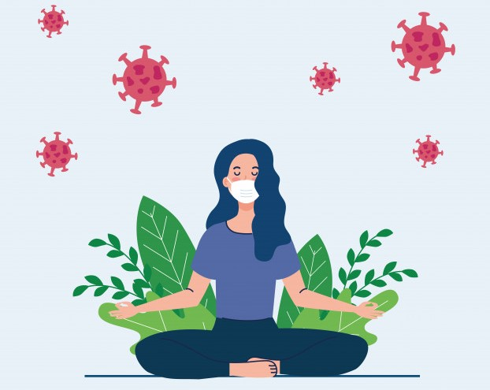

Mental Health and Coping During COVID-19

Coping with Stress
The COVID-19 pandemic has had a major effect on our lives. Many of us are facing challenges that can be stressful, overwhelming, and cause strong emotions in adults and children. Public health actions, such as social distancing, are necessary to reduce the spread of COVID-19, but they can make us feel isolated and lonely and can increase stress and anxiety. Learning to cope with stress in a healthy way will make you, the people you care about, and those around you become more resilient.
Stress can cause the following:
- Feelings of fear, anger, sadness, worry, numbness, or frustration
- Changes in appetite, energy, desires, and interests
- Difficulty sleeping or nightmares
- Difficulty sleeping or nightmares
- Physical reactions, such as headaches, body pains, stomach problems, and skin rashes
- Worsening of chronic health problems and mental health conditions
- Increased use of tobacco, alcohol, and other substances
It is natural to feel stress, anxiety, grief, and worry during the COVID-19 pandemic. Below are ways that you can help yourself, others, and your community manage stress.
Healthy Ways to Cope with Stress
- Take breaks from watching, reading, or listening to news stories, including those on social media. It’s good to be informed, but hearing about the pandemic constantly can be upsetting. Consider limiting news to just a couple times a day and disconnecting from phone, tv, and computer screens for a while.
- Take care of your body.
- Take deep breaths, stretch, or meditate.
- Try to eat healthy, well-balanced meals.
- Exercise regularly.
- Get plenty of sleep.
- Avoid excessive alcohol, tobacco, and substance use.
- Continue with routine preventive measures (such as vaccinations, cancer screenings, etc.) as recommended by your healthcare provider.
- Get vaccinated with a COVID-19 vaccine when available.
- Make time to unwind. Try to do some other activities you enjoy.
- Connect with others. Talk with people you trust about your concerns and how you are feeling.
- Connect with your community - or faith-based organizations. While social distancing measures are in place, try connecting online, through social media, or by phone or mail.
Helping Others Cope
Taking care of yourself can better equip you to take care of others. During times of social distancing, it is especially important to stay connected with your friends and family. Helping others cope with stress through phone calls or video chats can help you and your loved ones feel less lonely or isolated.
Mental Health and Crisis
- If you are struggling to cope, there are many ways to get help. Call your healthcare provider if stress gets in the way of your daily activities for several days in a row
- During times of extreme stress, people may have thoughts of suicide. Suicide is preventable and help is available. More about the risk of suicide, signs to watch for, and how to respond if you notice these signs in yourself or a friend or a loved one.
- Free and confidential crisis resources can also help you or a loved one connect with a skilled, trained counselor in your area.